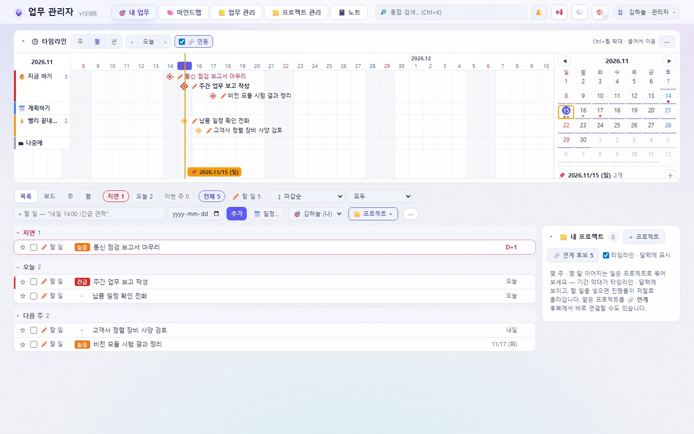
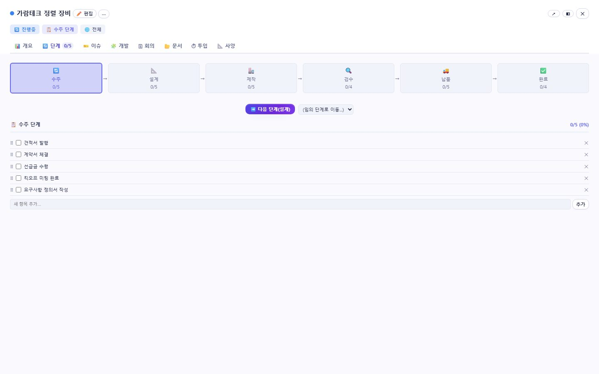
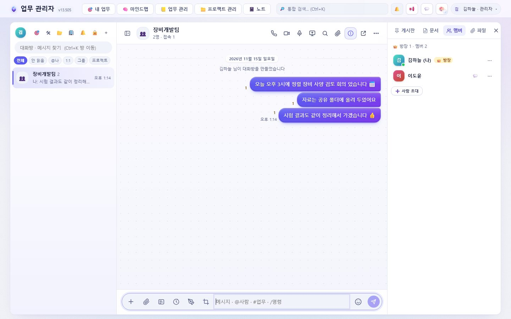
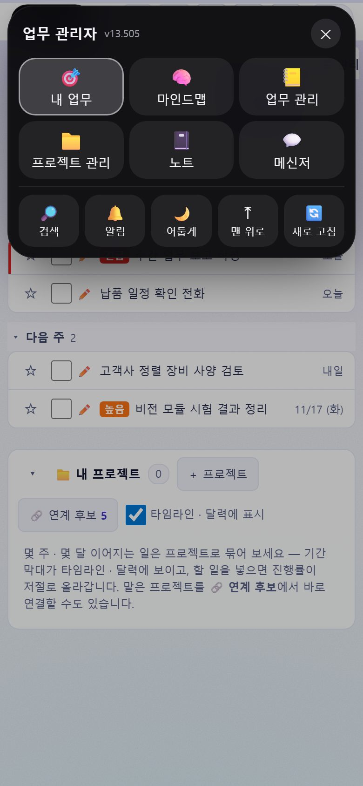

업무 관리자 사용 설명서
처음 쓰는 분이 10분 안에 익힐 수 있도록 꼭 필요한 것만 적었습니다. 화면 그림은 모두 가상의 예시입니다.
1. 설치 · 로그인
PC 앱 (Windows)
- 위의 ⬇ 내려받기를 눌러
WorkManager-Setup-x.y.z.exe를 받습니다. - 받은 파일을 실행합니다. "Windows의 PC 보호" 창이 뜨면 추가 정보 → 실행을 누릅니다.
- 설치가 끝나면 업무 관리자가 열립니다. 회사 관리자에게 받은 이메일 · 비밀번호로 로그인합니다.
휴대폰
- 아이폰: Safari로 회사 업무 관리자 주소 → 공유 → 홈 화면에 추가
- 안드로이드: Chrome으로 열고 ⋮ → 앱 설치
새 버전은 저절로 — 새 버전이 나오면 화면에 알림 띠가 뜹니다. 지금 새로 고침(PC는 F5)을 누르면 끝입니다. PC 앱도 함께 업데이트됩니다.
2. 화면 둘러보기
맨 위 대메뉴에서 큰 일을 고르고, 그 아래 하위 탭에서 세부 화면을 고릅니다.
- 🎯 내 업무 — 나의 할 일 · 일정 · 내 프로젝트
- 🧠 마인드맵 · 📓 노트북 — 생각 정리 · 회의록
- 📒 업무 관리 — 업무일지 주간 분석 · 주간 업무 보고 · 업무 부하
- 📁 프로젝트 관리 — 파이프라인 · 달력 · 타임라인 · 수주 · 이슈 · 문서 · A/S
머리 줄 오른쪽: 🔎 검색 · 🔔 알림 · 📢 공지 · 💬 메신저 · 🎨 화면 설정(테마 · 글자 크기) · 내 이름(프로필 · 로그아웃).
3. 내 업무

할 일 넣기
입력 칸에 "내일 14:00 !긴급 견적 회신"처럼 적고 Enter. 날짜 · 시간 · 중요도(!긴급 !중요)가 함께 들어갑니다.
정리하기
- 할 일을 누르면 상세 창 — 메모 · 하위 항목 · 반복 · 칸 · 프로젝트를 정합니다.
- ☆ 를 누르면 집중(맨 위로), 체크하면 완료.
- 보기 바꾸기: 목록 · 보드 · 타임라인 · 주 · 월. 달력에서는 끌어서 날짜를 옮깁니다.
- 몇 주씩 이어지는 일은 📁 내 프로젝트로 묶으면 타임라인 · 달력에 기간 막대가 생깁니다.
휴대폰 달력에 띄우기 — 내 업무 화면 오른쪽 위 ⋯ › 📅 달력 구독에서 만든 .ics 주소를 휴대폰 · 구글 · 아웃룩 달력에 추가하면 내 일정이 따라 들어갑니다.
4. 업무일지 분석

- 📒 업무 관리 › 주간 분석에서 📁 파일 열기로 엑셀 업무일지를 올립니다. 올린 기록은 팀 전체가 같이 봅니다.
- 주차 · 팀원 · 사업부를 고르고, 상세 · 분석 · AI 요약 · 내용요약 탭으로 봅니다.
- 상세에서는 사람 · 날짜 · 수주 · 낱개 · 격자로 묶어 보고, 거르기로 원하는 것만 남깁니다.
💾 주차 저장을 누르면 그 주 결과가 남아 다음에 비교할 수 있습니다.
5. 주간 업무 보고

- 📒 업무 관리 › 📅 주간 업무 › ✍️ 작성에서 지난주 실적 · 이번 주 계획을 씁니다.
- 옆 업무일지 패널에서 항목을 끌어다 넣으면 빠르게 채워집니다. 이미 넣은 것은 표시됩니다.
- 당장 처리하지 않을 항목은 처리 대기(휴지통)에 두었다가 다시 꺼냅니다.
- 🎯 계획 대비 실적에서 계획한 일이 실제로 됐는지 확인하고, 미리보기로 보고용 양식을 인쇄 · PDF로 냅니다.
6. 프로젝트 관리

- 파이프라인 — 수주 · 설계 · 제작 · 검수 · 납품 · 완료 단계별 카드. 카드를 눌러 다음 단계로.
- 상세 창 — 프로젝트를 누르면 열립니다. 탭: 개요 · 단계(체크리스트) · 이슈 · 개발 · 회의 · 문서 · 투입 · 사양.
- 타임라인 · 달력 — 마일스톤과 일정을 기간 막대로. 막대를 끌어 날짜를 바꿉니다.
- 이슈 · A/S — + 등록으로 접수하고 상태(접수 → 대응중 → 해결)를 바꿉니다. A/S 보고서는 PDF로.

7. 마인드맵 · 노트북

마인드맵
- + 새 맵 → 빈 맵 또는 템플릿. 주제를 고르고 Tab = 하위 주제, Enter = 같은 줄 주제.
- 주제에 담당 · 기간 · 진행률을 넣으면 간트로 볼 수 있습니다. 공유하면 함께 편집합니다.
노트북
- 회의록 · 메모를 폴더와 태그로 정리합니다. 쓰면서 오른쪽에 종이 모양 미리보기가 보입니다.
- Alt+W 어디서나 빠른 메모 · 🖨 출력 양식으로 여러 쪽을 묶어 출력.
8. 메신저

- ＋로 1:1 · 그룹 · 프로젝트 방을 만듭니다. 사진 · 파일(최대 2GB)은 끌어다 놓기.
- 사진을 누르면 칠판 — 표시를 그려 함께 봅니다.
- 말풍선을 길게 누르거나 ⋯ → 답장 · 인용 · 공지 · 할 일로 만들기 · 내 폴더에 담기.
- 📞 음성 통화 · 🖥 화면 공유 · 🎯 집중 모드(방해 금지).
9. 검색 · 알림 · AI
- 🔎 통합 검색 — Ctrl+K. 범주 칩으로 좁히고, 결과를 누르면 그 자리로 가서 형광으로 표시합니다.
- 🔔 알림 — 멘션 · 배정 · 마감 · 새 버전. 휴대폰 · PC 앱은 닫아 둬도 옵니다.
- ✨ AI에게 묻기 — "이번 주 지연 위험 프로젝트는?"처럼 물으면 우리 데이터로 답합니다.
- ✈️ 텔레그램 — 프로필에서 연결하면
/todo·/mywork로 등록 · 확인.
10. 휴대폰에서


- 왼쪽 위 검은 캡슐(아일랜드)을 누르면 빠른 메뉴 — 화면 이동 · 검색 · 알림 · 밝게/어둡게 · 새로 고침.
- 캡슐에 💬 숫자 = 안 읽은 메시지, ⬆ = 새 버전.
- 화면을 아래로 굴리면 하위 탭이 접혀 내용이 넓어집니다.
- 표 · 타임라인은 옆으로 밀어서 봅니다. 마인드맵은 두 손가락으로 확대 · 축소.
11. 자주 묻는 것
비밀번호를 잊었어요
회사 관리자에게 비밀번호 초기화를 부탁하세요. 로그인한 뒤에는 내 이름 › 프로필에서 바꿀 수 있습니다.
화면이 이상하거나 옛날 화면이에요
Ctrl+F5(휴대폰은 빠른 메뉴 › 새로 고침)로 새로 받아 주세요.
알림이 안 와요
🎨 화면 설정 또는 메신저 🔔에서 알림 켜기를 눌렀는지, 휴대폰 설정에서 업무 관리자 알림이 허용됐는지 확인하세요. 아이폰은 홈 화면에 추가한 앱에서만 알림이 옵니다.
설치 파일이 막혀요
"Windows의 PC 보호" 창에서 추가 정보 → 실행을 누르세요. 회사 PC에서 설치가 막혀 있으면 웹 브라우저로도 똑같이 쓸 수 있습니다.